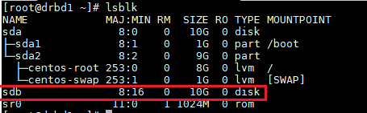
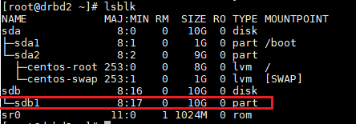
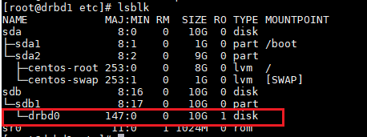
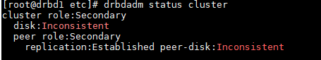
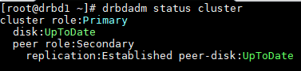
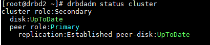

DRBD
DRBD (Distributed Replicated Block Device) is a distributed storage platform. It mirrors the content of block devices such as hard disks, partitions, logical volumes between servers. It consists of a kernel module, several userspace management applications and some shell scripts and is used on high availability clusters.
In this tutorial we are going to make a DRBD cluster. We’ll have following configuration of resources.
drbd1:
IP : 192.168.91.50
cluster disk : /dev/sdb ; 10 GB
drbd2 :
IP : 192.168.91.51
cluster disk : /dev/sdb ; 10 GB
DRBD can be installed from the EPEL repositories. Let’s start by importing the ELRepo package signing key, and enable the repository as shown on both nodes.
rpm --import https://www.elrepo.org/RPM-GPG-KEY-elrepo.org
rpm -Uvh http://www.elrepo.org/elrepo-release-7.0-3.el7.elrepo.noarch.rpm
Then we can install the DRBD kernel module and utilities on both nodes by running:
yum install -y kmod-drbd84 drbd84-utils
We have already added 10 GB of disk. You can add if you don’t have. And verify using the command lsblk on both the node.

Now create a partition on disk,
fdisk /dev/sdb
Create new partition, and make make kernel aware of it partprobe /dev/sdb1
Verify it using lsblk again. It should show similar like this.

DRBD’s main configuration file is located at /etc/drbd.conf. To replicate storage, we need to add the necessary configurations in the /etc/drbd.d/global_common.conf. We can define the resource information in .res file.
First make a backup of the original file on both nodes.
mv /etc/drbd.d/global_common.conf /etc/drbd.d/global_common.conf.orig
Make a new configuration in,
vi /etc/drbd.d/global_common.conf
Add the following lines,
global {
usage-count yes;
}
common {
net {
protocol C;
}
}
Where,
- protocol A: Asynchronous replication protocol; it’s most often used in long distance replication scenarios.
- protocol B: Semi-synchronous replication protocol; Memory synchronous protocol.
- protocol C: commonly used for nodes in short distanced networks; the most commonly used.
Now, we define our resource in a file called /etc/drbd.d/cluster.res. It is the file which consists of a particular replicated data set.
resource cluster {
on drbd1 {
device /dev/drbd0;
disk /dev/sdb1;
meta-disk internal;
address 192.168.91.50:7789;
}
on drbd2 {
device /dev/drbd0;
disk /dev/sdb1;
meta-disk internal;
address 192.168.91.51:7789;
}
}
Where,
- drbd1,drbd2 is hostname of the nodes.
- cluster is the name of the resource.
- device /dev/drbd0 is the name of virtual block managed by DRBD.
- disk /dev/sdb1 is the block for drbd cluster.
- meta-disk is where the DRBD stores its metadata. Using Internal means that DRBD stores its meta data on the same physical lower-level device as the actual production data.
- adress is for actual IP and port for the node.
Bring up the resource on both nodes,
drbdadm create-md cluster
Next, we should enable the resource, which will attach the resource with its backing device, then it sets replication parameters, and connects the resource to its peer. Run following command on both the nodes,
drbdadm up cluster
Now if you run the lsblk command, you will notice that the DRBD device/volume drbd0 is associated with the backing device /dev/sdb1

Check the status of DRBD
drbdadm status cluster
Note that the Inconsistent/Inconsistent disk state is expected at this point on both node.

At this stage, DRBD is now ready for operation. We now need to tell it which node should be used as the source of the initial device synchronization. Run the following command on only one node to start the initial full synchronization:
drbdadm primary --force cluster
See status on both node. In our case, drbd1 acts as primary while drbd2 as secondary.


Create a filesystem on the device which has the resource with primary role.
mkfs -t ext4 /dev/drbd0
Make a directory for accessing it and mount. Optionally, persistent mount; add it in /etc/fstab
mkdir -p /mnt/drbd1/
mount /dev/drbd0 /mnt/drbd1/
Add some file to the folder /mnt/drbd1.
cd /mnt/drbd1/
echo "This is DRBD setup" > test.txt
cd
We are going to see if drbd2 has mirror the data or not. For this we need to unmount, assign drbd1 secondary role.
umount /mnt/drbd1
drbdadm secondary cluster
Now assign drbd2 primary role, make the directory and mount it. The test.txt file should appear.
drbdadm primary cluster
mkdir -p /mnt/drbd2/
mount /dev/drbd0 /mnt/drbd2/
cd /mnt/drbd2/
ls -l
Pratik Gautam pratikgautm@gmail.com